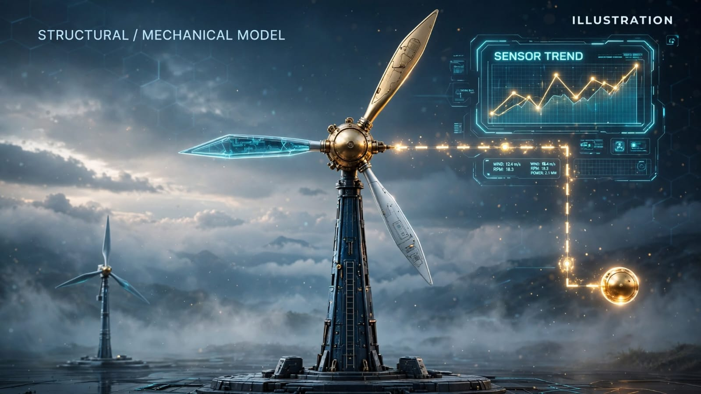

Motors, pumps and compressors
Explore vibration, temperatures, pressure, power, loading and flow under recorded operating conditions.
.jpeg) PYTHOLOGY
PYTHOLOGYFor equipment owners and engineering teams, we can discuss whether authorised sensor histories or read-only interfaces support a scoped investigation. A working simulation engine is not the same as live equipment monitoring.
Research context and evidence records · illustrations are conceptual, not measurements.

Physical Intelligence is being developed to compare approved equipment data with normal operating behaviour and flag measured departures for human investigation. Each real installation would require security, access permission, sufficient signal quality and independently demonstrated usefulness.
Explore vibration, temperatures, pressure, power, loading and flow under recorded operating conditions.
Potential measurements include displacement, strain, pressure, thermal loading and other calibrated signals, reviewed by qualified engineers.
Investigate equipment readings against seasons, environmental conditions and operational context.
Universities, workshops or individual owners may be able to scope a reproducible test with limited authorised records.
The original physical-intelligence page illustrates a synthetic rising vibration signal and an investigation window. The diagram below is retained from the existing source markup, not converted into a fictitious live time series.
First research finding occurred 910 seconds ahead of its own configured static alarm. Replay was deterministic across tested playback speeds.
Second seeded synthetic scenario produced a finding 837 seconds ahead of its static alarm. No real-world accuracy or false-positive rate is established.
The workbench includes a conceptual sourced bridge, a textbook beam and idealised cable-and-hanger force-balance experiments. Assumed sag, forces and dimensions cannot support a real bridge safety assessment.
Conditional physics-model scenarios may compare choices, but simulation outputs are not observations. A decision-support product would require validated models and client authorisation.
Identify the failure mode, existing instrumentation and a meaningful research question.
Review authorised read-only APIs or historical files, privacy, security and any costs.
Run a bounded experiment and show uncertainty, background behaviour and false alarms.
Consider a longer-term private dashboard only after useful evidence and mutual agreement.
Bring a question, data source, technical challenge or potential research collaboration. We distinguish operational systems from exploratory studies and independently validated results.